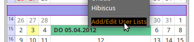
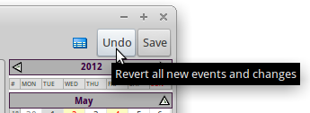
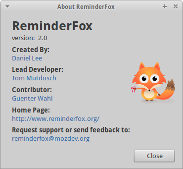

Overview
- The Calendar Layout has been expanded to show more than one month.The main dialog offers a third layout typically to show three months. The selected day in the month grid will be expanded, that way all events of that day are shown directly.
- Printing is more flexible and can be modified by the user.
- An Agenda page showing Todays, Upcoming events and the ToDo's List can be shown at startup of ReminderFox's host application (Firefox, Thunderbird, Seamonkey).
Calendar Layout
The "ReminderFox Dialog" has been expanded to have three layouts:
- Calendar only
- MainList and Calendar
- MainList only

Opening the ReminderFox Dialog will open the last used layout. The individual layout is selected with the upper left Foxy icon (see below for details).The two layouts 'MainList and Calendar' and 'MainList only' are very much the same the standard ReminderFox offers. The top part of the dialogs -- the 'Main Menu Bar' -- holds the main handles to work with all ReminderFox layouts.The Calendar part differs from the standard ReminderFox, now it can show more than one month.
Notes:
-- See also how to scale text size for 'MainList' and 'Calendar' individually
-- Use key operations for certain functions
ReminderFox buttons on the application menu bar
ReminderFox offers a few buttons which can be added to the applications menu bar using the "Customize ..." feature of the application (Firefox or Thunderbird):

The buttons are used for:
- Open the ReminderFox dialog, hovering the cursor over it will open the tooltips with the Today's, Upcoming Reminders and ToDo's
- The Calendar can be used to open a 3-month calendar which shows the relevant reminders. This is a method to works with reminders without opening the ReminderFox dialog. Any addition or change will be added to the ICS data model as well as to the ReminderFox dialog if open. This mode is limited to Reminders.
- Add a Reminder or Todo directly to the ICS data model.
ReminderFox 'Main Menu Bar'
The main menu bar offers the main handles to work with all layouts and the events:

The menu bar with layout for 'Calendar only' which is typically small.

The layout showing the main list -- typically with 'wider' layout -- uses buttons with text labels.
The controls on the top menu bar are:
- Foxy Menu
- Add (to add new Reminders or Todos)
- Reminders (Dropdown menu to select Reminders, Todos or User Lists)
- Search Text / Filter/Views
- Date Selector
- Right side buttons with [Revert] and [Save]
Alternatively the buttons [Add Event] and [ OK ] can be placed at a bottom menu bar:
 |

'Foxy' Menu
 |
Use the Foxy to open the 'main' menu with
|
Reminders/Todos/List
 |
The [Reminders] button opens a menu with all event lists: this replaces the tabs known from standard ReminderFox (Reminders, ToDos, and User Lists).After the selection the button label will change accordingly. An Options setting is available to open the menu by just hovering the cursor over the the button (see Options --> General/Display) |
|  | The last entry to the menu is used for a direct call to Options / List to manage the User Lists. |
Search Text / Filter/Views
 |
The Spyglass button will show/hide the "Search Text / Filter/Views" box. |
| The "SearchText / Filter/View" box opens with the "List/Calendar" layout on the Main Menu Bar beside the spyglass, with the "Calendar only" layout in a separate line below the Main Menu Bar : | |
 |
|
| "SearchText / Filter/View" has two helpful
search / filter functions:
The left Text box is for search all events which meets an entered text string. The search is done on the events attributes: Description, Categories, Notes, Location or all of these. First select the attribute, then enter the string. The search will be executed with each character entered. Displaying the List will change the appropriated list header (bold/blue), and the spyglass icon is changed and has a tooltiptext to show the selection/entry. So the user is remembered about the search entry. The string is cleared with the blue button, or with selecting another attribute. The right Filter/View pull down menu has two parts: the first 7 menu items selects all events in given date ranges (All events in the selected year, selected month, selected week, selected day, next week, next two weeks and all upcoming events). The second part of the menu offers a flexible, configurable filter mechanism -- the "Views", it also preselects/filters the events to be displayed in the List and Calendar. By default some definitions are provided. Additionally there is a "View Editor" which allows the user to add own definitions. With selecting a Filter/View menu item the ReminderFox Dialog titel will reflect that selection, eg. "Reminderfox [Selected Week]". With selecting a "View" the menu has an additional item to allow to export/send the events selected by that "View". More details can be found on the general documentations pages. Closing the "Search Text / Filter/View" box will NOT reset to all events. The Dialog Titel, the List Header and the modified spyglass will remember about the setting. Closing the ReminderFox Dialog will remember the "SearchText / Filter/View" box status (open/close) and will return to that status with reopen the main dialog. |
|
Date Selector
 |
A mouse click on the Date Selector opens a small panel
with [Today] and [OK] buttons and a selection box.
The right mouse click on the Date Selector sets the year / month to "Today" -- the same as using the key ".", see also Key functions.That selection box allows to set any date. Select day, month or year and increase/decrease with button right to them. Using the very right button will open an additional calendar widget. Either way changes the date. [OK] will take that as the 'selected' date. |
Revert / Save Buttons
Some changes to the standard ReminderFox: Both buttons are disabled as long as no new events has been entered and/orno event has been edited and the buttons have not been used.[Undo] Button
|  | The 'Undo' button is a revert function for all new and changed events. Using it - after confirmation - all unsaved changes will be lost -- all of them! |
 |
All new and changed events will be stored to the ICS data file. The dialog will NOT be closed -- other as with standard ReminderFox. |
Keys
| [ Cntrl ] [ t ] | change main dialog layout: Calendar --> MainList and Calendar --> MailList |
| [ Cntrl ] [ l ] | change list: Reminder --> Todo --> List --> |
| [Page up] [Page down] | change 'selected month' |
| [ . ] | go to Today |
| [ Cntrl ] [ c ] | hide / unhide completedevents |
| [ Cntrl ] [ q ] or [ Cntrl ] [ shift ] [ ? ] | toggle the Spyglass with "Search Text / Filter/View" |
| [ Cntrl ] [ f ] | open search / filter dialog |
| [ Cntrl ] [ r ] | reload current ICS data file; helpful to sync with remote system (Lightning, Dropbox) |
Text and Calendar Size
The new layout of the Calendar also features a variable size concept. That is achieved with changing the text size. Additionally also the text size of the List can be changed. For both -- the "Main List" and the "Calendar" -- the modes are:
[ Key ] [ + ] [ - ] [ # ] |
[ key] = [ Cntrl ] change the size for Calendar |
[ key] = [ Alt ] change the size for List |
|
[ # ] = Reset to default text size |

Calendar
|
|
The ReminderFox Dialog box opens with a small layout. As usual it can be sized as required.
The dialog box has two parts - the "Main Menu Bar" (as described above) and - the "Calendar" box. The "Calendar" contains the current Calendar Year box, the Week Header Box, the Month Boxes. If these elements are too high to fit into the dialog box, Arrow Scroll Handles are added. Arrowscrolling doesn't include the 'Week Header Box'. That way the Week Header Box showing the days of the week is always on screen. |

Week Header Box
Week days labeling (eg. SUN MON .. SAT) is en-/disabled with ReminderFox Options tab: "List Display".Select "Base / US" scheme or "ISO8601 / European" format.
The first day of a week can be selected also with mouse click on the day header label (MON .. SUN)
Month Box
The Calendar displays a number of months, by default three. The user can change that with a preference value extensions.reminderFox.calendarMonths.Each month is displayed with Month Header, a grid with the weeks of the month.
If the week numbering is enabled (see ReminderFox Options tab: "List Display") the first box column shows the week number.
Month Header
Mouse click on the first and last month header box changes the months to be displayed. These method allows to scroll the months in both directions, also changing the year boundary.
 |
Click on the arrow on the first month header will show the previous month. |
 |
Click on the arrow on the last month header will show the next month.Notes:
|
Day Box in Month Grid
Days of the month are grouped by weeks; if enabled the week number is shown in the first column. Days not belonging to the month in the box will be shown with light gray numbers and are not selectable.Days of the month will be shown with black numbers as long as there are not special events/attributes:
- bold text: actual day (today)
- red text: day has important event
- light gray text: belongs to previous/next month
- day with event(s) has yellow background
- day with completed event has gray background
Days without events:
- No day panel is shown.
- Click on the day will select that day as the "Selected Day".
- Right mouse click will open the "Add Event" dialog.
Day with events:
- Mouse hovering over day opens pops up a Day Content Box.
The "Selected Day" with events will be displayed differently in 'Calendar only' mode or 'MainList / Calendar':
'Calendar' only This mode is shown at the beginning of this document. Other than with MainList/Calendar there are benefits:
- column of the 'Selected day' is expanded
- selected day box shows the Day Content Box
- the events have a context menu to allow different actions
'MainList / Calendar'
- selected day has black boarders
- hovering the mouse cursor over the day boxes with events will show the Day Content Box for that day
Day Content Box
The 'Day Content Box' will be shown with
- hovering the cursor over a day of the month grid with events on that day or
- in 'Calendar only' mode as content for the 'Selected Day'.
That box have two parts:
- Day Header shows the week day and the day date - formatted as set with ReminderFox Options --> List Display.Click on the day header will open a "Add Event" dialog to add a new event.
- Day Event Box which holds all items of an event of the day. If the day has multiple events, there are multiple day event boxes.
Day Event Box
 |
This day content box has multiple events, the cursor was hovered over the second. The color changed to show it's selected.Here the cursor was moved over the summary. Another mouse click would open that event for editing. |
- line 1 -- Day and Time shown only if
- the event has start/end time -- so it's not a whole day event
- multi day event -- in that case start and end days are displayed
- line 2 -- Icon / Summary line always shown
- leading icons for special attributes (see also Event Icons)
- event summary
- Text attributes are: -- red: important -- strike thru: completed
- line 3 -- Date completed line shown only if valid
- line 4 and following line(s) shown only if valid
- location -- mouse click on the link goes to Goggle Maps
- URL -- mouse click on the link goes to web page
On the Event Box a context menu offers: Add, Edit, Copy, Delete, Complete, Send/Export
Event Icons
Events with certain attributes are displayed with icons in front of the event summary:

Hover over or click the mouse on the icon to get specific actions:
 |
Notes | show notes text |
 |
Categories | show event categories |
| open mail message | ||
 |
Alarm with Snooze | show alaram setting |
| Remind until completed | show status of event | |
 |
Repeating event | show repeating details |
 |
Show in tooltip text | for Todos/User Lists |
Feedback
|  | Please use the "About ReminderFox" dialog and one of the mailto links |